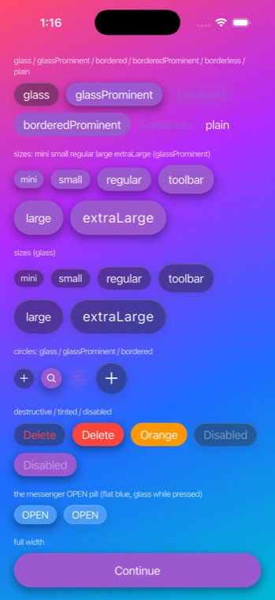

Каталог / Каркас приложения и роутинг
SwiftUiApp
Корень приложения в стиле кита: тема, навигатор или router, прогрев GPU.
Как выглядит


Что это
Аналог MaterialApp с SwiftUiThemeData вместо ThemeData. Поддерживает home/routes и SwiftUiApp.router(routerConfig:). themeMode — Flutter-ный ThemeMode, реэкспортируется китом.
SwiftUiApp.router(
themeMode: ThemeMode.system,
theme: SwiftUiThemeData.light(),
darkTheme: SwiftUiThemeData.dark(),
routerConfig: router,
)Параметры (из dartdoc)
SwiftUiApp
| Параметр | Тип | По умолчанию | Описание |
|---|---|---|---|
theme | SwiftUiThemeData? | The theme in light mode (null: SwiftUiThemeData.light). | |
darkTheme | SwiftUiThemeData? | The theme in dark mode (null: SwiftUiThemeData.dark). | |
themeMode | ThemeMode | ThemeMode.system | Which of the two is used; ThemeMode.system follows the platform brightness. |
warmUp | bool | true | Compile the kit's GPU pipelines under the first frames (see RavelWarmUp). |
navigatorKey | GlobalKey<NavigatorState>? | ||
scaffoldMessengerKey | GlobalKey<ScaffoldMessengerState>? | ||
home | Widget? | ||
routes | Map<String, WidgetBuilder> | const <String, WidgetBuilder>{} | |
initialRoute | String? | ||
onGenerateRoute | RouteFactory? | ||
onGenerateInitialRoutes | InitialRouteListFactory? | ||
onUnknownRoute | RouteFactory? | ||
navigatorObservers | List<NavigatorObserver> | const <NavigatorObserver>[] | |
builder | TransitionBuilder? | Wraps the navigator (or the router's content). The kit's own wrapper (the warm-up) sits above it. | |
title | String | '' | |
onGenerateTitle | GenerateAppTitle? | ||
color | Color? | ||
locale | Locale? | ||
localizationsDelegates | Iterable<LocalizationsDelegate<dynamic>>? | ||
localeListResolutionCallback | LocaleListResolutionCallback? | ||
localeResolutionCallback | LocaleResolutionCallback? | ||
supportedLocales | Iterable<Locale> | const <Locale>[Locale('en', 'US')] | |
showPerformanceOverlay | bool | false | |
showSemanticsDebugger | bool | false | |
debugShowCheckedModeBanner | bool | true | |
shortcuts | Map<ShortcutActivator, Intent>? | ||
actions | Map<Type, Action<Intent>>? | ||
restorationScopeId | String? | ||
scrollBehavior | ScrollBehavior? |
Импорт: import 'package:swiftuikit/swiftuikit.dart';